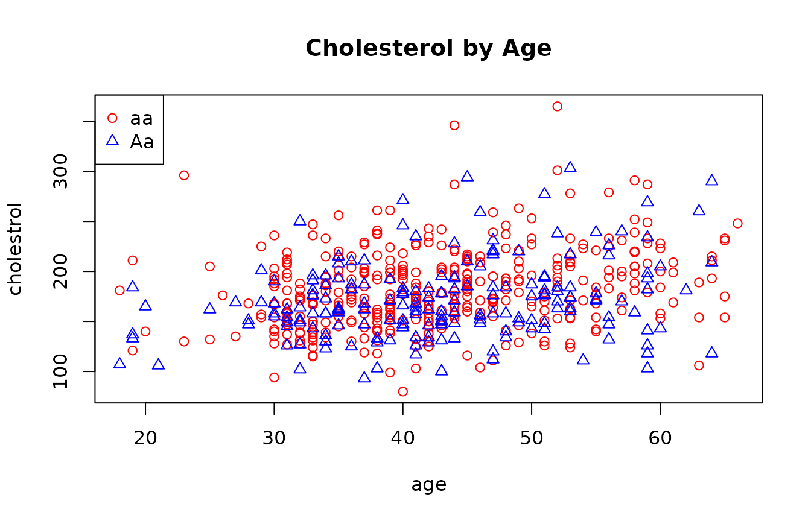
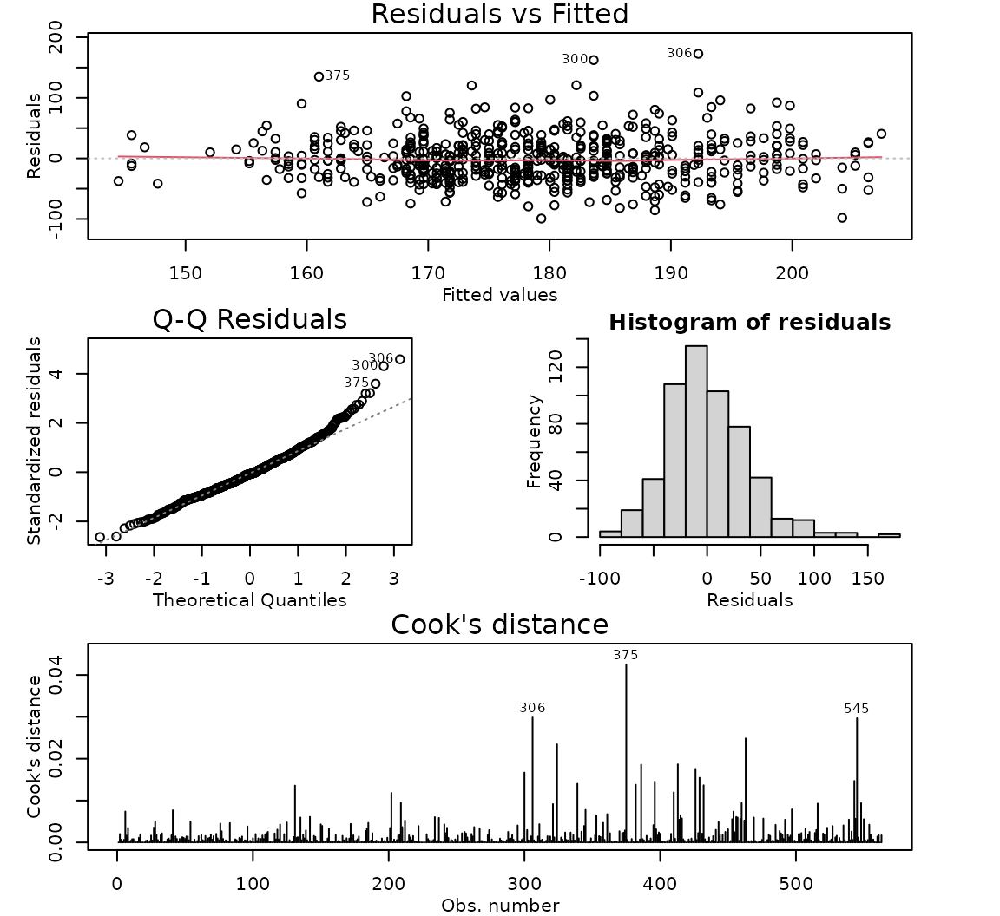
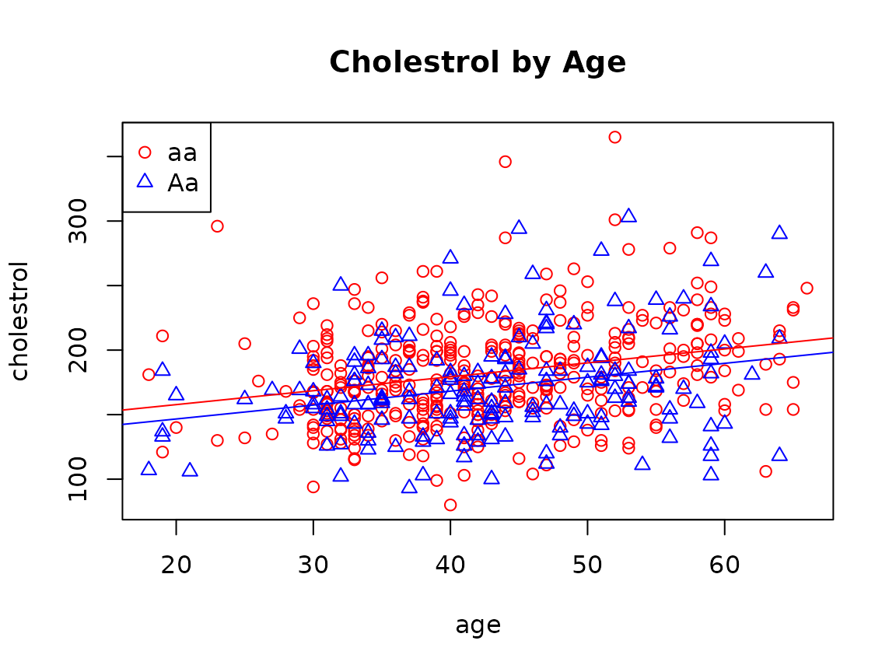

Case Study 9.6: STATS 201/8 Extra Case Study - Parallel Lines Model
Source:vignettes/articles/CS9_6.Rmd
CS9_6.RmdQuestion 1
Researchers were interested in trying to find factors linked to cholesterol level in people. They were studying a genotype at a marker that was believed to be associated with cholesterol level. Data was collected on the genotype for a random sample of people recruited from the Dallas region. Their cholesterol level, age and their genotype at the marker (identified from a blood sample) were recorded. It was known that cholesterol levels generally increased with age. What was of interest was:
- Did any age effect differ between the genotypes? If so, how?
- If not, were there differences in average cholesterol levels between the different genotypes? If so, quantify this. Also quantify any age effect.
The resulting data are in the file Dallas.csv, which contains the variables:
| Variable | Description |
|---|---|
| cholesterol | The cholesterol level (mg/dL) of the study subject. |
| age | The age (years) of the study subject. |
| genotype | The genotype at the marker (classed as either aa or Aa). |
Note: a third genotype was identified, but in very small numbers. For the purposes of this question, the data was simplified to two levels of genotype.
Instructions:
- Comment on plot of the data.
- Fit an appropriate model to the data. Check the model assumptions.
- Write appropriate Methods and Assumption Checks.
- Plot the data with your appropriate model superimposed over it.
- Write an appropriate Executive Summary. Ensure that you have answered all the questions of interest.
Question of interest/goal of the study
We are interested in how the age and genotype at a locus are related to the cholesterol level and we are also interested in whether the effects of age are the same at different genotype.
inspect the data:
dallas.df = read.csv("Dallas.csv", header = TRUE, stringsAsFactors = TRUE)
plot(cholestrol ~ age,
data = dallas.df, main = "Cholestrol by Age",
col = ifelse(genotype == "aa", "red", "blue"),
pch = ifelse(genotype == "aa", 1, 2)
)
legend('topleft', c("aa", "Aa"), col = c("red", "blue"), pch = c(1, 2))
Comment on plot
It seems there is a slightly increasing linear relationship between age and cholesterol level, and the trend for genotype “aa” and “Aa” looks similar. It is difficult to see a difference between the two genotypes, but there are fewer high values for Aa and fewer low values for aa, so maybe aa tends to higher values.
Fit an appropriate linear model and Check Assumptions
##
## Call:
## lm(formula = cholestrol ~ age * genotype, data = dallas.df)
##
## Residuals:
## Min 1Q Median 3Q Max
## -99.230 -24.442 -3.142 21.158 172.420
##
## Coefficients:
## Estimate Std. Error t value Pr(>|t|)
## (Intercept) 134.73029 8.74294 15.410 < 2e-16 ***
## age 1.11249 0.19957 5.574 3.87e-08 ***
## genotypeAa -6.85095 14.96410 -0.458 0.647
## age:genotypeAa -0.09974 0.33978 -0.294 0.769
## ---
## Signif. codes: 0 '***' 0.001 '**' 0.01 '*' 0.05 '.' 0.1 ' ' 1
##
## Residual standard error: 37.77 on 559 degrees of freedom
## Multiple R-squared: 0.08938, Adjusted R-squared: 0.08449
## F-statistic: 18.29 on 3 and 559 DF, p-value: 2.481e-11
# Drop interaction
dallas.lm2 = lm(cholestrol ~ age + genotype, data = dallas.df)
modelcheck(dallas.lm2)
summary(dallas.lm2)##
## Call:
## lm(formula = cholestrol ~ age + genotype, data = dallas.df)
##
## Residuals:
## Min 1Q Median 3Q Max
## -99.323 -24.667 -2.959 21.271 172.740
##
## Coefficients:
## Estimate Std. Error t value Pr(>|t|)
## (Intercept) 136.1998 7.1619 19.017 < 2e-16 ***
## age 1.0781 0.1614 6.680 5.77e-11 ***
## genotypeAa -11.1300 3.3772 -3.296 0.00104 **
## ---
## Signif. codes: 0 '***' 0.001 '**' 0.01 '*' 0.05 '.' 0.1 ' ' 1
##
## Residual standard error: 37.74 on 560 degrees of freedom
## Multiple R-squared: 0.08924, Adjusted R-squared: 0.08598
## F-statistic: 27.43 on 2 and 560 DF, p-value: 4.3e-12
confint(dallas.lm2)## 2.5 % 97.5 %
## (Intercept) 122.1322911 150.267335
## age 0.7610855 1.395082
## genotypeAa -17.7635170 -4.496539Plot the data with your appropriate model superimposed over it
plot(cholestrol ~ age,
data = dallas.df, main = "Cholestrol by Age",
col = ifelse(genotype == "aa", "red", "blue"),
pch = ifelse(genotype == "aa", 1, 2)
)
legend('topleft', c("aa", "Aa"), col = c("red", "blue"), pch = c(1, 2))
ests <- coef(dallas.lm2)
abline(ests[1], ests[2], col = "red")
abline(ests[1] + ests[3], ests[2], col = "blue")
Method and Assumption Checks
We have two explanatory variables, one factor and one numeric, so have fitted a linear model to the data and checked for evidence of interaction between age and genotype. As there was no evidence of interaction (P-value = 0.769), we dropped the interaction term and fitted the next model. We have not been able to further simplify the model.
The assumptions were satisfied for this model. (There was a little bit of right skewness in the residuals, but nothing of major concern.)
Our model is: where if the th subject has genotype Aa at the marker and 0 otherwise.
Our model explained 8.9% of the variability in the data.
Executive Summary
We are interested in how the age and genotype at a locus are related to the cholesterol level and whether the effects of age are the same given different genotypes.
We have evidence that both age and genotype affects cholesterol levels, but no evidence that the effects of age on cholesterol levels differ across different genotype groups.
Cholesterol levels tended to increase with age. For individuals with the same genotype, we estimate that the average cholesterol level increases by between 8 and 14 mg/dL for each additional 10 years of age.
On average, people with genotype “aa” have the higher cholesterol levels than people with the Aa genotype, regardless of their age. For individuals with the same age, we estimate that the mean cholesterol level for people with genotype “aa” is between 4.5 and 17.8 mg/dL higher than those with genotype “Aa”.